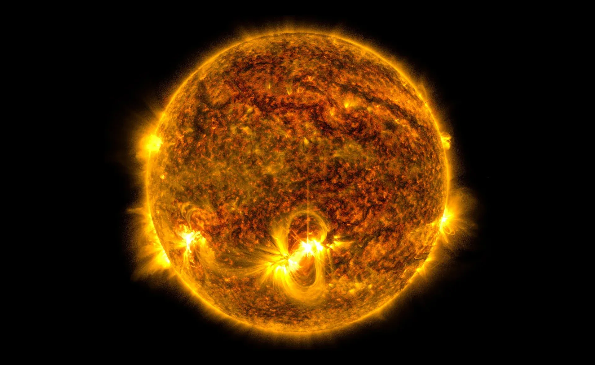
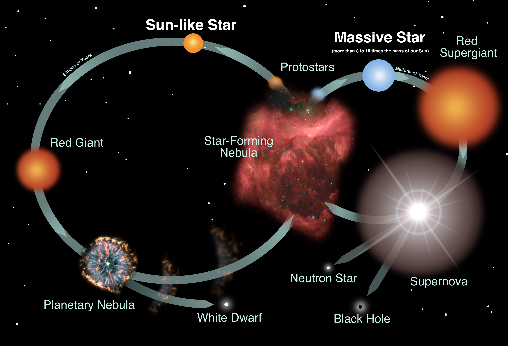
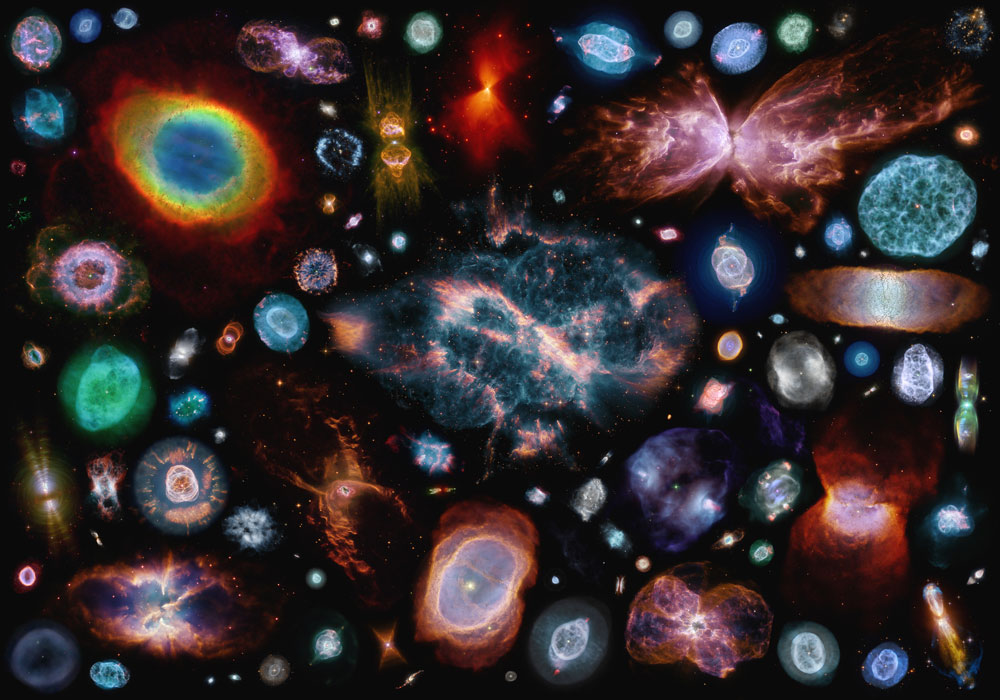
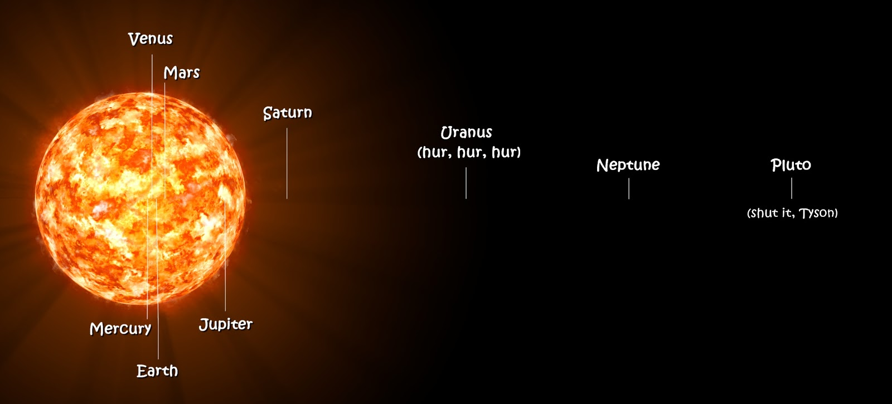

STARS

Stars are massive, luminous spheres of hot plasma held together by gravity. They shine because nuclear fusion in their cores converts mass into energy, producing light and heat that can travel across space for millions or billions of years. Stars are the factories that create most chemical elements: they form hydrogen and helium into heavier elements, and they spread those elements into space when they shed their outer layers or explode at the end of their lives.

What stars are made of
Most stars are made mostly of hydrogen and helium, with small amounts of heavier elements (astronomers call these “metals”). Because stars are so hot, matter inside them exists as plasma: atoms are broken into nuclei and free electrons.
Gravity tries to compress the star inward, while pressure from the hot gas and the energy from fusion push outward. A stable star is a balance between these two forces (hydrostatic equilibrium).
Why stars have different colors
A star’s color is mostly a clue to its surface temperature. Hotter stars look blue-white, while cooler stars look orange or red. This is related to how a hot object emits light (roughly like a “blackbody”).
Color alone doesn’t tell you everything, though. Two stars can have similar colors but very different sizes and brightness. That’s why astronomers use diagrams like the Hertzsprung–Russell (H-R) diagram to compare temperature and luminosity.
Light, spectra, and elements
When we spread starlight into a rainbow (a spectrum), we see dark absorption lines. Those lines act like fingerprints of elements in the star’s atmosphere—hydrogen, helium, sodium, calcium, and many others. Spectra can also reveal a star’s temperature, surface gravity, rotation, and whether it’s moving toward or away from us (Doppler shift).
How many stars are there?
We don’t know an exact number. A common order-of-magnitude estimate for the observable universe is ~10^22 to 10^24 stars (that’s roughly 10–1000 sextillion), because there may be hundreds of billions of galaxies, each with billions to trillions of stars.
In our own Milky Way alone, estimates are commonly on the order of ~100–400 billion stars. Even within our galaxy, most stars are too faint to see without telescopes.

Birth, life, and death
Birth: stars form inside cold molecular clouds. When a dense region collapses, it heats up and becomes a protostar. Once the core gets hot and dense enough, hydrogen fusion starts and the star enters a long stable phase.
Life: most of a star’s life is spent on the main sequence, fusing hydrogen into helium. In Sun-like stars this happens mainly through the proton–proton chain; in more massive stars it is dominated by the CNO cycle. A star’s mass controls almost everything: temperature, brightness, and lifetime. Massive stars burn fuel quickly and live fast; small stars burn slowly and can last for an extremely long time.
Death: when the core runs out of fuel, the star changes structure. Sun-like stars expand into red giants, then shed their outer layers and leave behind a white dwarf. Very massive stars become supergiants and can end in powerful supernova explosions.
Why mass is the “main control knob”
Mass sets the pressure and temperature in the core. Higher core temperature makes fusion much faster, so big stars are brighter but shorter-lived. Small stars are dim but stable for a long time. This is why the universe contains many long-lived red dwarfs.
What happens to the material?
When stars lose mass—through stellar winds, expanding envelopes, or explosions—they enrich surrounding space with heavier elements. Later generations of stars (and planets) form from this “recycled” material. In that sense, many of the atoms in Earth and in our bodies were once inside stars.
Planetary nebulae and stellar nebulae
Planetary nebulae are glowing shells of gas ejected by dying low-mass stars, representing the end of a star's life, whereas stellar nebulae (or stellar nurseries/emission nebulae) are massive clouds of dust and gas where new stars are born. Planetary nebulae are short-lived graveyards, while stellar nebulae are vibrant, long-lasting birthplaces.




Brightness, distance, and why stars twinkle
A star can look bright for two different reasons: it can be truly luminous, or it can be close to us. Astronomers separate these ideas into luminosity (true power output) and apparent brightness (how bright it looks from Earth).
Stars twinkle because Earth’s atmosphere is turbulent. As starlight passes through moving layers of air, it is bent in slightly different ways from moment to moment, which makes the star’s brightness and position seem to shimmer. Planets usually twinkle less because they appear as tiny disks rather than point-like sources.
Main star types
Stars are grouped by mass, temperature, and evolutionary stage.
These categories overlap: for example, a red dwarf is also a main sequence star, while a red giant is a later evolutionary stage. The main idea is that mass and age drive how a star looks and behaves.

VY Canis Majoris
VY Canis Majoris (VY CMa) is a very luminous, evolved massive star in the constellation Canis Major. It is classified as a red hypergiant: a rare phase where a massive star has expanded to an enormous size and is losing mass through powerful winds.
Note: the image here is an illustration of a red supergiant/hypergiant-type star (not necessarily VY CMa itself), used to match the style of the page.
How big is it? “How many Suns fit inside?”
Because its atmosphere is extended and dusty, the star’s exact radius is uncertain and depends on how you define the “surface”. But the key idea is scale: if a star’s radius is about 1000× the Sun’s, its volume is roughly $1000^3 = 10^9$ times bigger.
So in a simple “volume” sense, a star that large could fit on the order of a billion Suns inside it (as a rough, easy-to-remember comparison). This is an illustration, not a precise measurement.
What happens next (supernova)
Stars as massive as VY CMa are expected to end their lives in a core-collapse supernova. Before that, they can lose a lot of mass, forming complex shells of gas and dust around them. The explosion enriches space with heavy elements and can leave behind a compact remnant (often a neutron star or a black hole).
Would it affect us?
From Earth, such an event would be an incredible sky show, but the main danger from a supernova comes from being very close (roughly within a few tens of light-years). VY CMa is far away compared to that, so it is not considered a direct threat to Earth.
Even when it’s not dangerous, massive-star explosions matter for the universe: they help create and spread the elements that later become new stars, planets, and life.